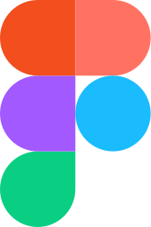

Hello I'mBinay Shaw.
About me.
Work Experience.
Software Developer InternIONAGEJuly 23 - Present
01
Software Developer InternHumara NagarJan 23 - Mar 23
02
Software Developer InternEdvoraOct 22 - Nov 22
03
Skills & Tools.

Sometimes I love to click.


My Side Projects.